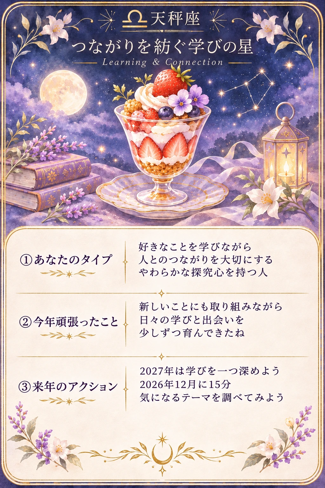

A LITTLE GIFT FROM THE STARS
今年の私に
星からの贈りもの
今年の出会いや小さな一歩を
あなただけのカードにしよう

ひとりでは見えなかった色 · 作品見本
ワークシートを
ふりかえる
ワークシートに書いた内容をコピーして、同じ名前の欄に貼り付けてね。
どれか1つの欄に内容を貼り付けてね。
02 · A CARD FOR YOU
あなたの物語を
一枚のカードへ
あなたの言葉から 星とスイーツの物語を紡ぎ
3つのメッセージを一枚におさめます
☾あなたのタイプ振り返りから見える あなたらしい魅力
✧今年頑張ったこと一歩ずつ重ねてきた努力や挑戦
❃来年のアクション2026年12月の最初の一歩 → 2027年の目標
カード生成用のプロンプト
コピーしたプロンプトをChatGPTに貼り付けて送信してください
カードができたら
- ChatGPTで生成した画像を保存してね。
- ワークシートに戻って、保存した画像を貼り付けよう。